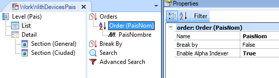
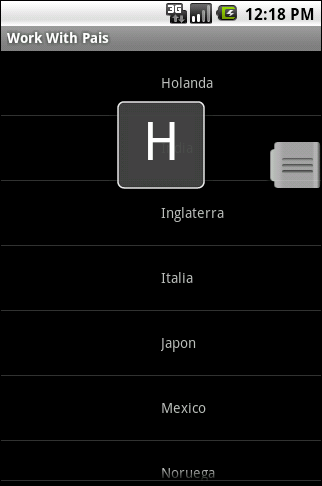
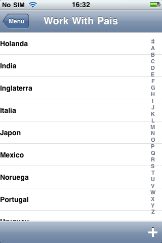

The Enable Alpha Indexer property is applied at the Orders level in the List.  It provides a better view of the first character of the word we’re moving through, in order to simplify searches in long lists.   Notes:
|
| Backlinks |
| Orders property |